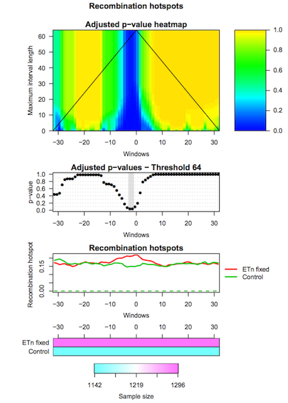

Interval-Wise Testing for omics data
Overview
QuestionsObjectives
- How to visualize high-resolution omics data in different groups of genomic regions?
- How to evaluate differences in high-resolution omics data between groups of genomic regions?
- How to detect locations and scales at which the significant effects unfold?
Requirements
- Pre-process high-resolution omics data
- Create pointwise boxplots corresponding to different groups of genomic regions
- Perform the Interval-Wise Testing between two groups of genomic regions
- Visualize and inspect test results
- Detect relevant locations and scales
Time estimation: 1h
Introduction
IWTomics implements the Interval-Wise Testing (IWT) for omics data. This inferential procedure tests for differences in “Omics” data between two groups of genomic regions, and does not require fixing location and scale at the outset.
In this tutorial we use real data about endogenous retroviruses (ERVs) in mouse. In particular, we compare recombination hotspots in the flanking regions of fixed ETn versus control regions. The dataset contains two region datasets “ETn fixed”, “Control” and one feature “Recombination hotspots content”. The region dataset “ETn fixed” contains 1296 genomic regions of 64 kb surrounding fixed ETns elements (32-kb flanking sequences upstream and 32-kb flanking sequences downstream of each element). The region dataset “Control” contains 1142 regions of 64 kb without elements, used as control in the test. The regions are aligned around their center (i.e. around the ETn integration sites).
Recombination hotspots measurements are associated to each “ETn fixed” and “Control” region. In particular, this feature is measured in 1-kb windows, so that each region is associated to a recombination hotspots curve made of 64 values. The measurement used is the feature content, i.e. the fraction of the 1-kb window that is covered by recombination hotspots
The data we use in this tutorial is available at Zenodo.
Agenda
IWTomics is composed of three steps (corresponding to three tools):
Step 1: Loading and pre-processing
The first tool (IWTomics Load Smooth and Plot) imports a collection of genomic region datasets, and associates to each region multiple genomic feature measurements. It allows to align the regions in multiple ways (center, left, right or scale alignment), to smooth the feature curves (possibly filling gaps in the measurements) and to create a graphical representation of the feature measurements in each region datasets (aligned curves or pointwise quantile curves).
Hands-on: Get the data
- Create a new history for this tutorial
- Import datasets:
- Fixed ETn (
ETn_fixed.bed) regions- Control (
Control.bed) regions- Recombination Hotspot (
Recombination_hotspots.txt) contenthttps://zenodo.org/record/1288429/files/ETn_fixed.bed https://zenodo.org/record/1288429/files/Control.bed https://zenodo.org/record/1288429/files/Recombination_hotspots.txt- Import header files for regions and features:
regions_header.tabularfeatures_header.tabularhttps://zenodo.org/record/1288429/files/regions_header.tabular https://zenodo.org/record/1288429/files/features_header.tabular
Hands-on: Pre-process data and create pointwise boxplot
Load, Smooth and Plot : Run Load, Smooth and Plot with:
- Select the two region datasets
ETn_fixed.bedandControl.bed.- Select the region header file
regions_header.tabular.- Select the feature file
Recombination_hotspot.txt.- Select the feature header file
features_header.tabular.- Start positions are 0-based in this example; all region alignments are equivalent in this case.
- You can choose to smooth the feature curves.
- Select the graphical representation type Pointwise quantile curves (boxplot).

Step 2: Performing Interval-Wise Testing
The second tool (IWTomics Test and Plot) statistically evaluates differences in genomic features between groups of regions along the genome. In particular, it implements the Interval-Wise Testing for omics data, an extended version of the Interval-Wise Testing for functional data presented in Pini and Vantini (2017).
It allows to perform multiple two sample permutation tests between pairs of region datasets, on several features. It returns the adjusted p-value curves for every test and all possible scales. Moreover, it creates a graphical representation of the Interval-Wise Testing results and a summary plot (optional) with p-values at the maximum scale. The tool IWTomics Plot with Threshold on Test Scale permits to select the scale to be used in the plots.
Hands-on: Test for difference between ETn and Control regions
Test and Plot : Run Test and Plot with:
- Select the
IWTomicsData Object,Region Dataset IDs, andFeature IDscreated during Step 1.- Select pairs of genomic region datasets to be compared using two-sample Interval-Wise Testing. In this example we consider one two-sample test contrasting
ETn_fixed(select it as Region 1) toControl(select it as Region 2).- Select feature measurements to be tested. In this example, select
Recomb_hotfeature.- You can choose the test statistic, the number of permutations, and the significance level of the test (alpha).
- Select the graphical representation type Pointwise quantile curves (boxplot).

Step 3: Selecting test scale
The third tool (IWTomics Plot with Threshold on Test Scale) allows to select the scale for the Interval-Wise Testing results. In particular it returns the p-value curves for the different tests performed at the selected scale, and it creates a graphical representation of the Interval-Wise Testing results and a summary plot (optional) at the selected scale.
Hands-on: Change scale for test results
Plot with Threshold on Test Scale : Run Plot with Threshold on Test Scale with:
- Select the
IWTomicsData Object with Test Results,Test IDs, andFeature IDscreated during Step 2.- Select the scale to be used in Interval-Wise Testing results and plot. Select the test identifier
ETn_fixed vs Control, the feature identifierRecomb_hot, and the scale8(8-kb scale).- Select the graphical representation type Pointwise quantile curves (boxplot).

Additional resources:
Read more about IWTomics here.
Key points
- High-resolution omics data can be represented as curves along the genome
- IWTomics permits to visualize these data
- The Interval-Wise Testing detects statistically significant differences between pairs of genomic regions
- The Interval-Wise Testing corrects p-values taking into consideration the ordered nature of measurements along the genome
- Locations and scales do not need to be specified at the outset, indeed IWTomics permits to detect them
Useful literature
Further information, including links to documentation and original publications, regarding the tools, analysis techniques and the interpretation of results described in this tutorial can be found here.
Congratulations on successfully completing this tutorial!
Help us improve this content!
Please take a moment to fill in the Galaxy Training Network Feedback Form. Your feedback helps us improve this tutorial and will be considered in future revisions.